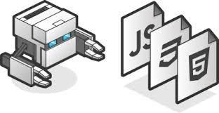
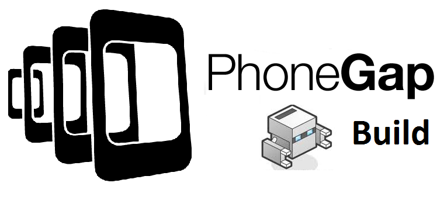

PhoneGap
Jessica Cabanillas - Mayo 2017
Historia

PhoneGap es una distribución de Apache Cordova.5 La aplicación se llamó en un principio "PhoneGap", y posteriormente "Apache Callback". Ambos sistemas tienen funciones casi idénticas, la diferencia principal entre Apache Cordova y Phonegap es que el segundo tiene acceso a servicios de compilación en la nube proporcionados por Adobe Creative Cloud.
Apache Cordova es un software de código abierto y tanto este como PhoneGap pueden ser utilizados libremente en cualquier aplicación sin necesidad de atribución o licencias de ningún tipo.
Jessica Cabanillas - Mayo 2017
¿Qué es PhoneGap?

PhoneGap es una solución de Adobe que nos permite llevar el desarrollo para la web al mundo de los dispositivos. Se basa en una “envoltura” que nos permite ejecutar aplicaciones desarrolladas con HTML, CSS y Javascript como si fueran aplicaciones nativas para los teléfonos móviles o tablets.
Las aplicaciones que podemos desarrollar con PhoneGap se pueden publicar en las conocidas tiendas de aplicaciones (Google Play, Windows Store o App Store de Apple) y, al igual que las aplicaciones nativas, también son capaces de acceder a los periféricos de los dispositivos como la cámara, acelerómetro, etc.
Lo mejor de PhoneGap es que permite escribir una única vez el código de la aplicación, con tecnologías HTML5, y publicarlo en cualquier plataforma móvil dentro de las más conocidas. Así que, o bien desarrollas tu aplicación en nativo para cada uno de los sistemas operativos, con el consiguiente trabajo que ello conlleva, o la programas una única vez usando alguna plataforma como PhoneGap.
Jessica Cabanillas - Mayo 2017
Características

Características principales
Phonegap permite crear actualmente aplicaciones móviles para: iPhone, Android, Windows Phone, Blackerry, Blackberry 10, webOS, Symbian y Bada
Las APIs que proporciona PhoneGap son:
Acelerómetro
Cámara
Compás
Contactos
Sistema de Ficheros
Geolocalización
Media
Red
Notificaciones (alertas, sonido, vibración)
Almacenamiento
Las aplicaciones creadas con PhoneGap sólo pueden nutrirse de HTML, CSS y Javascript. Si requieren lógica generada por otros lenguajes de programación, deberán conseguirla de un backend a través de APIs o webservices
Ofrece un servicio en la nube llamado PhoneGap Build que permite construir rápidamente apps móviles y compilarlas con facilidad sin necesidad de SDKs, compiladores o hardware específico.
Tiene una licencia Apache 2.0
Jessica Cabanillas - Mayo 2017